SalineBreeze-1
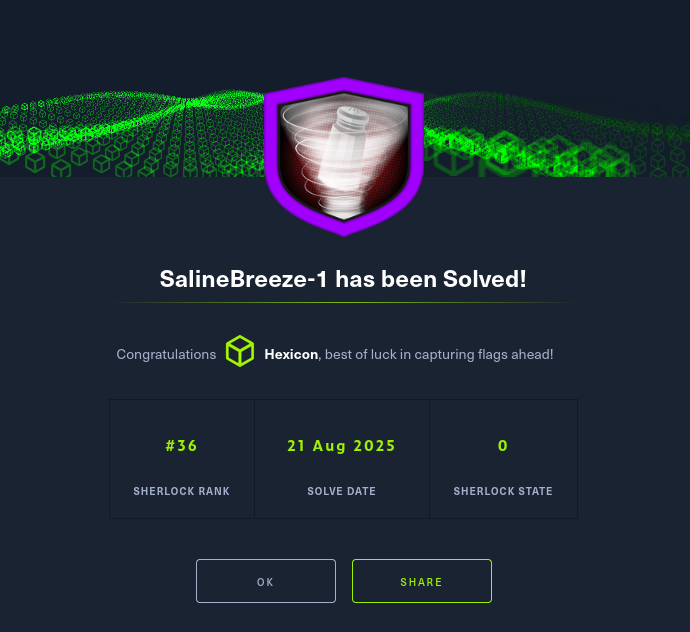
Your manager has just informed you that, due to recent budget cuts, you'll need to take on additional responsibilities in threat analysis. As a junior threat intelligence analyst at a cybersecurity firm, you're now tasked with investigating a cyber espionage campaign linked to a group known as Salt Typhoon. Apparently, defending against sophisticated Nation-State cyber threats is now a "do more with less" kind of game.
Your Task: Conduct comprehensive research on Salt Typhoon, focusing on their tactics, techniques, and procedures. Utilize the MITRE ATT&CK framework to map out their activities and provide actionable insights.
Your findings could play a pivotal role in fortifying our defenses against this adversary. Dive deep into the data and show that even with a shoestring budget, you can outsmart the cyber baddies.
Task 1
Starting with the MITRE ATT&CK page, which country is thought be behind Salt Typhoon?
I will head to the MITRE ATT&CK website first. From the main page, I can navigate to the groups section. CTI -> Groups.
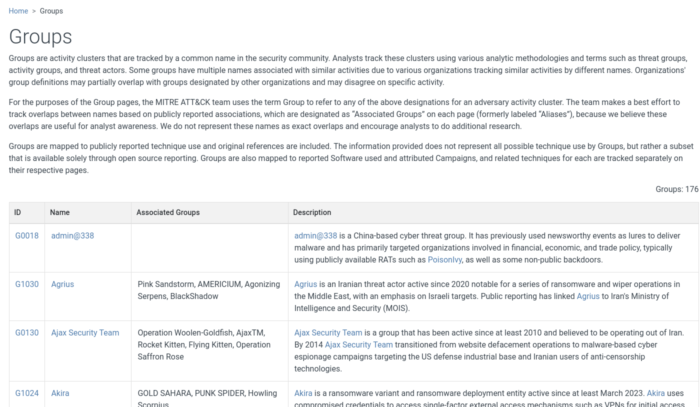
Then I can search for salt typhoon, and the related group should pop up.
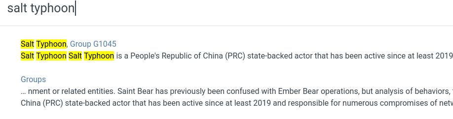
Here it is, Group 1045 from PRC active since at least 2019.
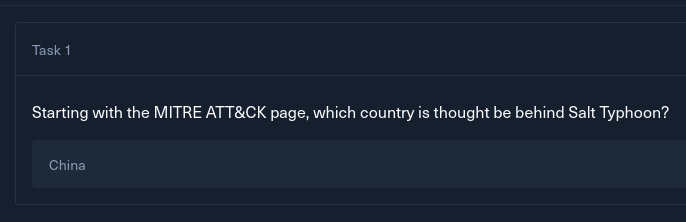
Task 2
According to that page, Salt Typhoon has been active since at least when? (Year)
This has been answered while solving task 1. The answer is 2019.
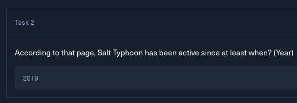
Task 3
What kind of infrastructure does Salt Typhoon target?
I can browse the resulting page to gather more information about the actor.
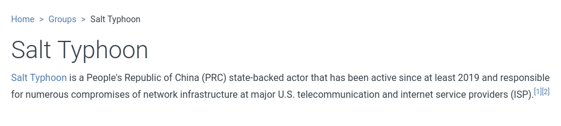
The description states that Salt Typhoon is responsible for numerous attacks on American internet service providers and network infrastructure.
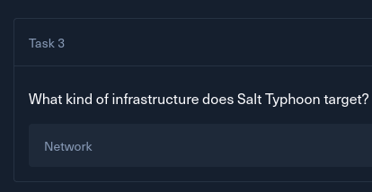
Task 4
Salt Typhoon has been associated with multiple custom built malware, what is the name of the malware associated with the ID S1206?
Looking at the software section of the adversary entry, I can see only one piece of malware.
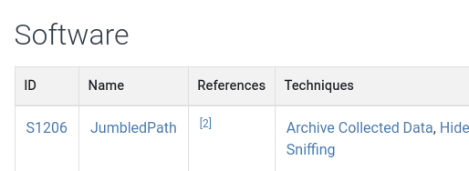
The ID matches the question. This is the answer.
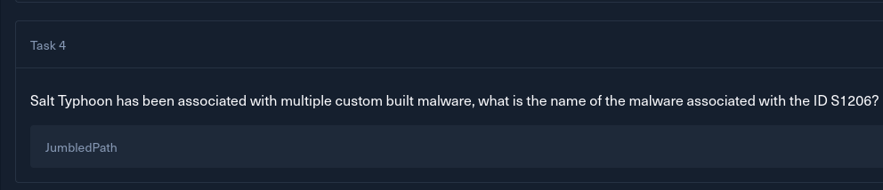
Task 5
What operating system does this malware target?
I can get more data about JumbledPath by clicking on this entry. This will take me to the malware's entry on MITRE.
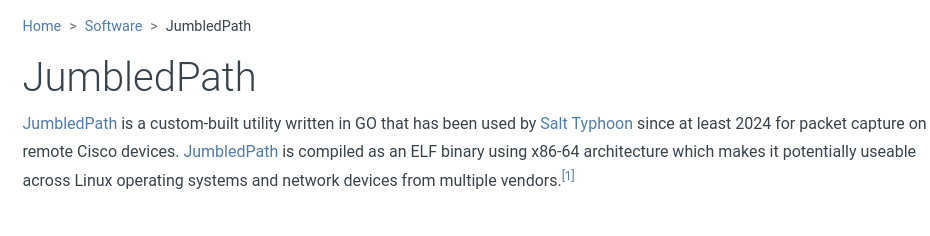
The description mentions that it is an ELF binary written in GO, meaning it is usable against Linux and Unix-like systems.
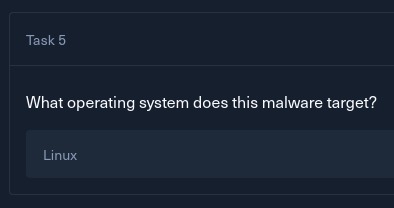
Task 6
What programming language is the malware written in?
This has been answered while solving task 5. The answer is GO.
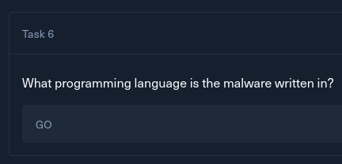
Task 7
On which vendor's devices does the malware act as a network sniffer?
In the techniques used section of the malware entry, I can see a mention of network sniffing.
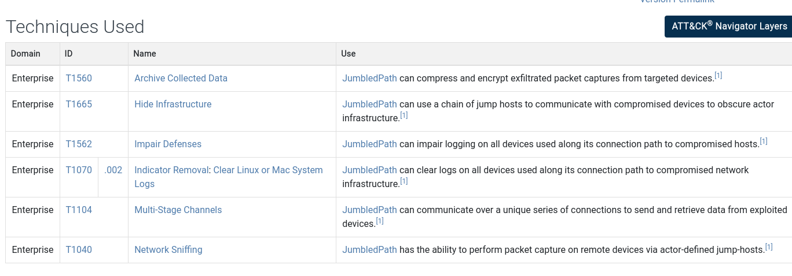
The malware can perform packet sniffing on reachable network devices. The linked reference leads to an operation, which reveals which vendor this functionality targeted in the past.
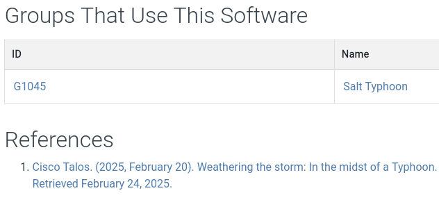
The answer is Cisco.
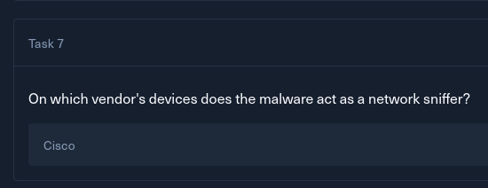
Task 8
The malware can perform 'Indicator Removal' by erasing logs. What is the MITRE ATT&CK ID for this?
In the techniques used list, I can see the log removal capability listed.
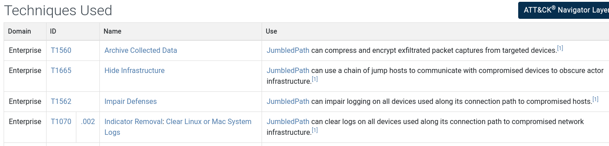
The ID is T1070.002
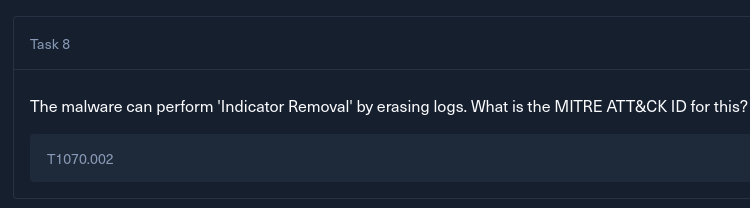
Task 9
On December 20th, 2024, Picus Security released a blog on Salt Typhoon detailing some of the CVEs associated with the threat actor. What was the CVE for the vulnerability related to the Sophos Firewall?
With the given details, I quickly found the mentioned article on the web.
https://www.picussecurity.com/resource/blog/salt-typhoon-telecommunications-threat
This article explains the group well, elaborating on techniques used, defensive measures against the threat actor, and CVEs used by them.
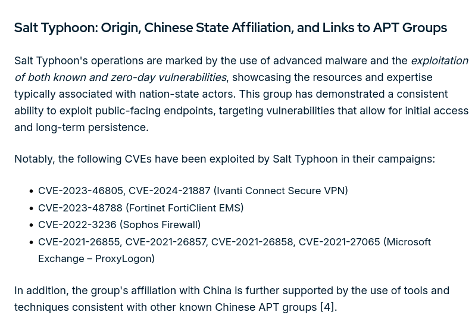
The CVE tied to the Sophos Firewall is CVE-2022-3236, a code injection vulnerability in the User Portal and Webadmin, leading to remote code execution.
https://nvd.nist.gov/vuln/detail/cve-2022-3236
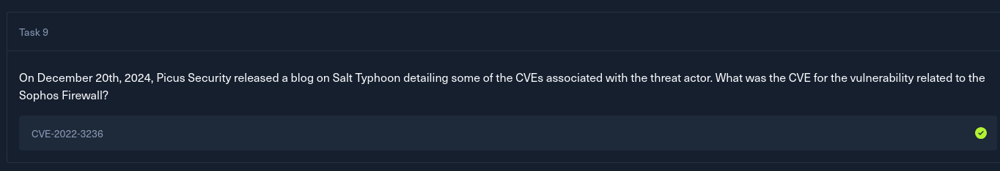
Task 10
The blog demonstrates how the group modifies the registry to obtain persistence with a backdoor known as Crowdoor. Which registry key do they target?
Reading through the persistence techniques, I found the Modify Registry technique.
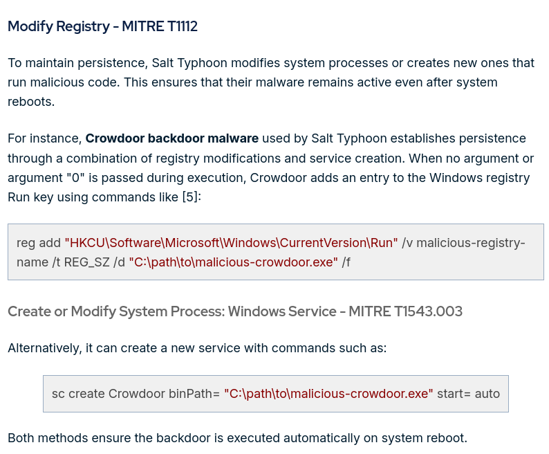
The Crowdoor backdoor malware, used by the group, can add an entry into the HKCU\Software\Microsoft\Windows\CurrentVersion\Run registry key, causing execution on system reboot.
In addition to that, the malware can create a service with sc create Crowdoor binPath= "C:\path\to\malicious-crowdoor.exe" start= auto, leading to the same persistence effect.
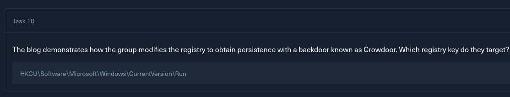
Task 11
What is the MITRE ATT&CK ID of the previous technique?
This can be checked on the MITRE website, but the blog entry already lists it correctly at T1112.
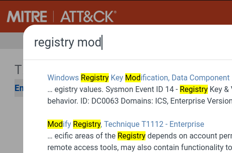
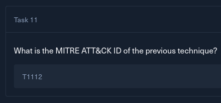
Task 12
On November 25th, 2024, TrendMicro published a blog post detailing the threat actor. What name does this blog primarily use to refer to the group?
I quickly found the blog post online by using the provided information.
https://www.trendmicro.com/en_us/research/24/k/earth-estries.html

In this article, the group is named as Earth Estries. In the previous article written by Picus Security, this name also popped up at the beginning.
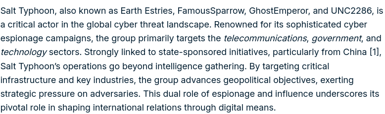

Task 13
The blog post identifies additional malware attributed to the threat actor. Which malware do they describe as a 'multi-modular backdoor...using a custom protocol protected by Transport Layer Security'
Under the Campaign Beta section, which describes the TA's attacks on telecommunications companies and government entities, A new backdoor going by the name GHOSTSPIDER is listed.

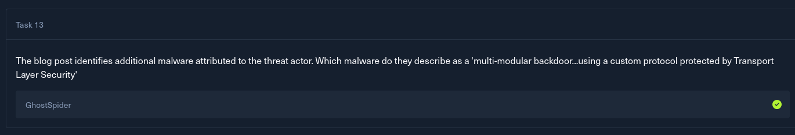
Task 14
Most of the domains the malware communicates with have a .com top-level domain. One uses a .dev TLD. What is the full domain name for the .dev TLD?
The TrendMicro article has a list of IoCs(Indicators of Compromise). I'll download this list, and if I don't see what I'm looking for, I will search for GhostSpider on VirusTotal.
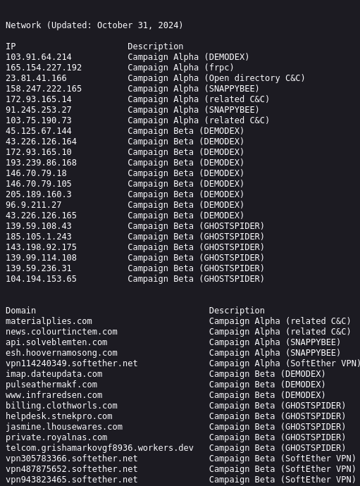
There is a list of domains used throughout the two campaigns, labeled with the context in which they were used. There are 5 related to GhostSpider, only one of them not being a .com domain.
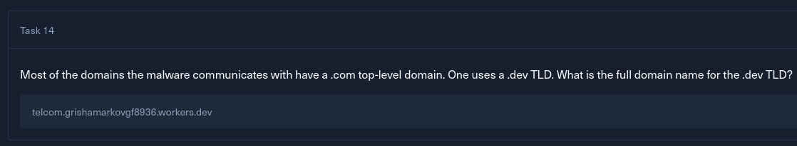
Task 15
What is the filename for the first GET request to the C&C server used by the malware?
In the TrendMicro article, within the section describing the malware's communication protocol, there is an image showing the stager's first request to its C2 server.
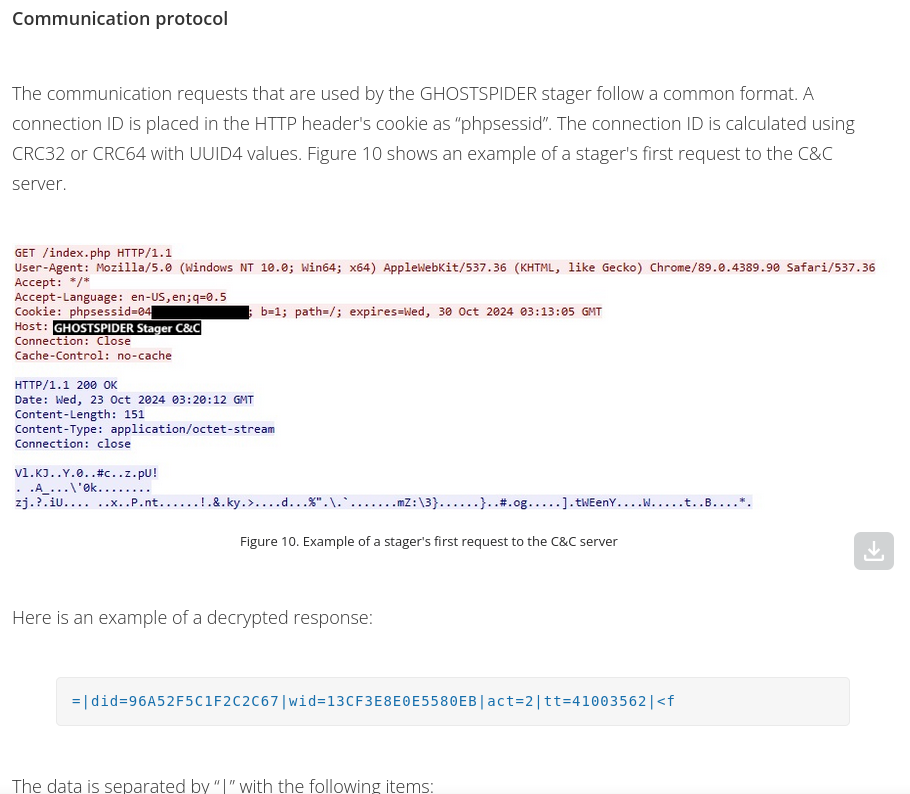
The first request sent towards the C2 server is a GET request aimed at index.php.
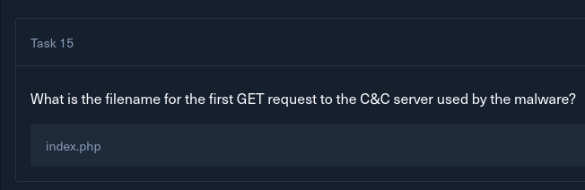
Task 16
On September 30th, 2021, a blog post was released on Securelist by Kaspersky. What was the threat actor's name at that time?
Using the data from the question, I found a SecureList article titled GhostEmperor: From ProxyLogon to kernel mode
https://securelist.com/ghostemperor-from-proxylogon-to-kernel-mode/104407/
Once again, a different name for the same TA is used. GhostEmperor is used in the Picus Security article as well.
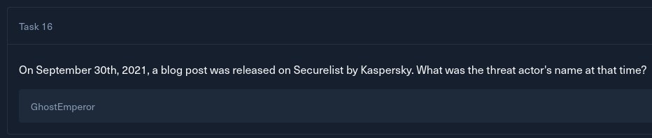
Task 17
What is the name of the malware that this article focuses on?
Right away from the article name, I can kind of guess that it will be about Demodex, the rootkit mentioned in the two previous articles.
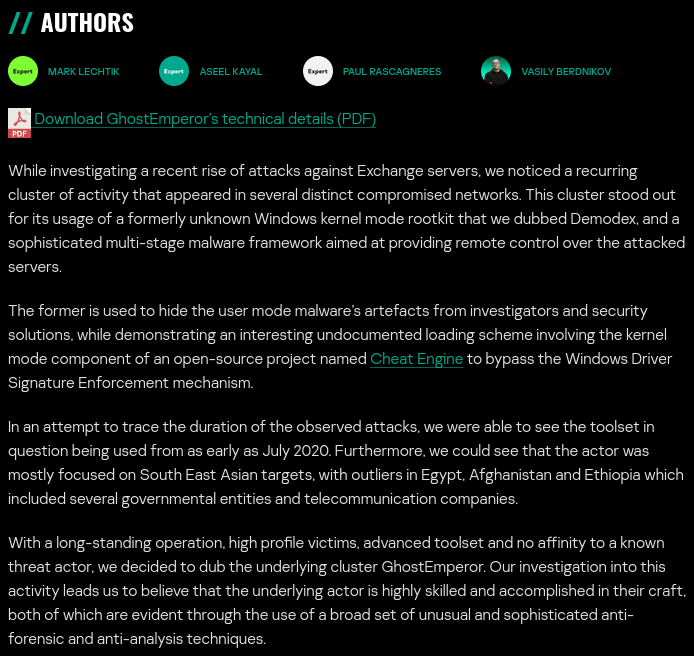
The article focuses on Demodex, the rootkit.
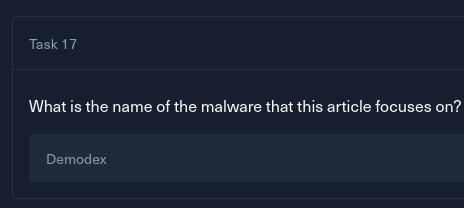
Task 18
What type of malware is the above malware?
This has already been answered while solving task 17. The answer is rootkit
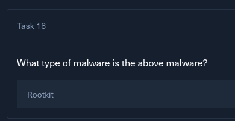
Task 19
The first stage consists of a malicious PowerShell dropper. What type of encryption is used to obfuscate the code?
Reading further into the article, in the infection chain overview, I can see an AES-encrypted string being decrypted into variables.
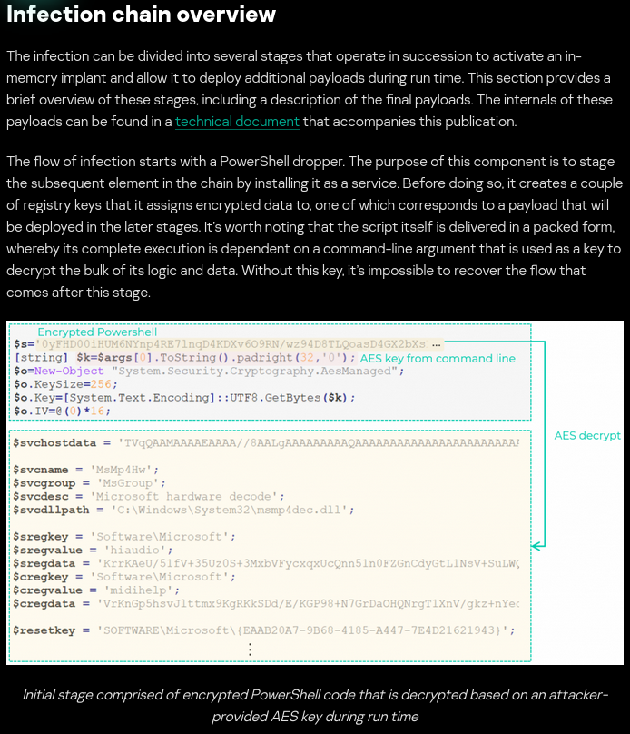
Data from the string is decrypted with a key, passed in as a command-line argument to the dropped. Without the key, no decryption can happen.
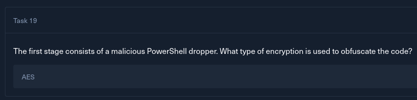
Task 20
The malware uses Input/Output Control codes to perform various tasks related to hiding malicious artifacts. What is the IOCTL code used by the malware to hide its service from the list within the services.exe process address space?
To load the rootkit, a legitimate and signed driver used by Cheat Engine is used (dkb64.sys), in order to avoid protective measures and system crashes.

Once Demodex is loaded, it serves the purpose of hiding artifacts of the malware's service. This is achieved by various IOCTLs(Input/Output Control Codes) exposed by its driver.
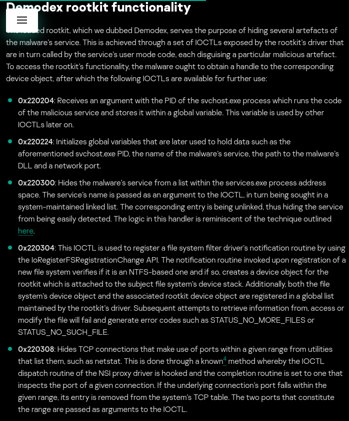
There are quite a few IOCTLs with different usages, but the one that is used to hide it's services from the services.exe process address space is 0x220300
0x220300: Hides the malware’s service from a list within the services.exe process address space.
The service’s name is passed as an argument to the IOCTL, in turn being sought in a system-maintained linked list.
The corresponding entry is being unlinked, thus hiding the service from being easily detected. The logic in this handler is reminiscent of the technique outlined here.
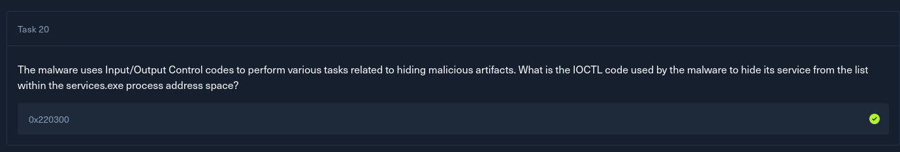
Solved!